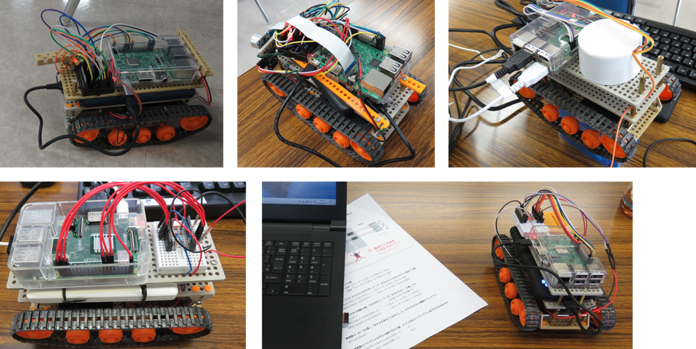

午前と午後の２回開催
第50,51回 Scratchで音楽を演奏しよう＆ラズタンク操縦するぞ
午前は伊勢原市で開催しているポパイ倶楽部の岩田さん講師によるScratch音楽の遊び方講座です。午後はいよいよ全員でラズタンク（ラズパイで操作する移動ロボット）を操作する段階に挑戦です。
本日の青梅Dojo出欠確認です
ニンジャの申し込みは午前19名・午後8名の延べ27名。保護者8名、メンター9名、見学2名の延べ46名が参加してくれました。
伊勢原市で開催しているポパイ倶楽部の岩田さん講師によるScratch音楽の遊び方講座はじめます

本日のワークショップ１．Scratchプログラミング（入門・初級）
Scratch拡張機能で音楽を作れるのは知っていると思うけれど、同時にいくつもの楽器を演奏して三重奏、四重奏と豪華な演奏ができるんですね。そして子供たちは耳コピで音楽を作って発表してくれました。曲のタイトルは当ててみよう「HappyBirthday」「コンビニの入店音」「カエルの合唱（カエルの鳴き声付き）」などなど楽しい発表会になりました♪
発表会の作品は６月季節感がでていますねっ
午前の部でも電子工作はできます
はじめてのプログラミング、未経験者にはScratchプログラミングを楽しくメンターがレクチャーしています。小学生向けに電子工作をやってみたい人には午前中にmicro:bitをつかった電子工作もできますよ。
なんとmicro:bitでメカナムホイールの自動走行にチャレンジしている小学生ニンジャも登場。来月はmicro:bitを２台使ってリモート操作にチャレンジしたいとのこと。お手伝いしますよ。

こちらのショベルカーはなんとペーパークラフトです。あおぞら社のオンラインショッピングで買えるCars Craftシリーズのひとつにサーボモーターを組み込んでみました。なお、サーボモーターを正常に動かすには付属電池ボックス２本の3Vでは電圧が足りないので電池3本4.5Vで動かします。

本日のワークショップ２．ラズパイ電子工作。
今日のゴール目標は「みんなで一緒にラズタンクを操作するぞ」です。いよいよ、みんなで追いかけっこしようよ。
ラズタンクの組立を完了し、メンターが配線検査。リモートデスクトップ接続して、運転するpythonコードを実行します。がんばれー。
配線の整理の仕方が十人十色のラズタンク。すごいです。子供たちニンジャがそれぞれ自分で考えて工夫して、アイディアをみんなに分け与えてくれます。

開発するのだ。そして改造してほしいのだ。
テストドライブ。う・動きが鈍い。しまった乾電池３本（4.5V）ではキャタピラを駆動させるチカラが足りないようだ。乾電池４本（6V）に変更します。来月はみんなで遊べるかな。
次回は7月16日(日)開催です。
お問い合わせのあるCoderDojo青梅の午後の部は、青梅IT未来塾の修了生が参加できます。修了生ではないけれど参加したいという意欲のある子（小５以上）には個別にLinux & Python教室を提供し、そのあとで午後の部に参加しています。それまでは午前のmicro:bitをお勧めします。
Connpassでイベント告知するので、またの参加をお待ちしています。参加申し込みはこちらのConnpassから
 CoderDojo青梅にご質問メールはこちら
CoderDojo青梅にご質問メールはこちら
😃